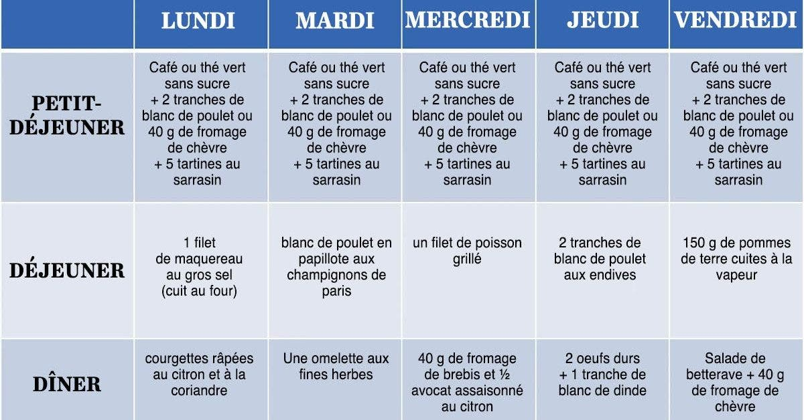

L’ultra minceur est souvent source de complexes et expose à des problèmes de santé. Quand on est concerné, mieux vaut s’efforcer de retrouver un indice de masse corporelle "normal", c’est-à-dire supérieur à 18,5. Pour y parvenir, la recette est simple : augmenter l’apport énergétique, tout en conservant des menus équilibrés. Doctissimo vous donne des exemples de menus adaptés pour prendre du poids.

DES EXERCICES SPORTIFS POUR GRSSIR
Pas besoin de passer des heures à la salle de sport pour avoir une silhouette ferme et tonique. Voici une sélection des meilleurs exercices pour perdre du poids, faciles à faire à la maison. Combinez-les et pratiquez-les deux ou trois fois par semaine – en tenue de sport ou même en pyjama, le matin avant de filer sous la douche ! Vous avez vos règles ? Rien ne vous arrête